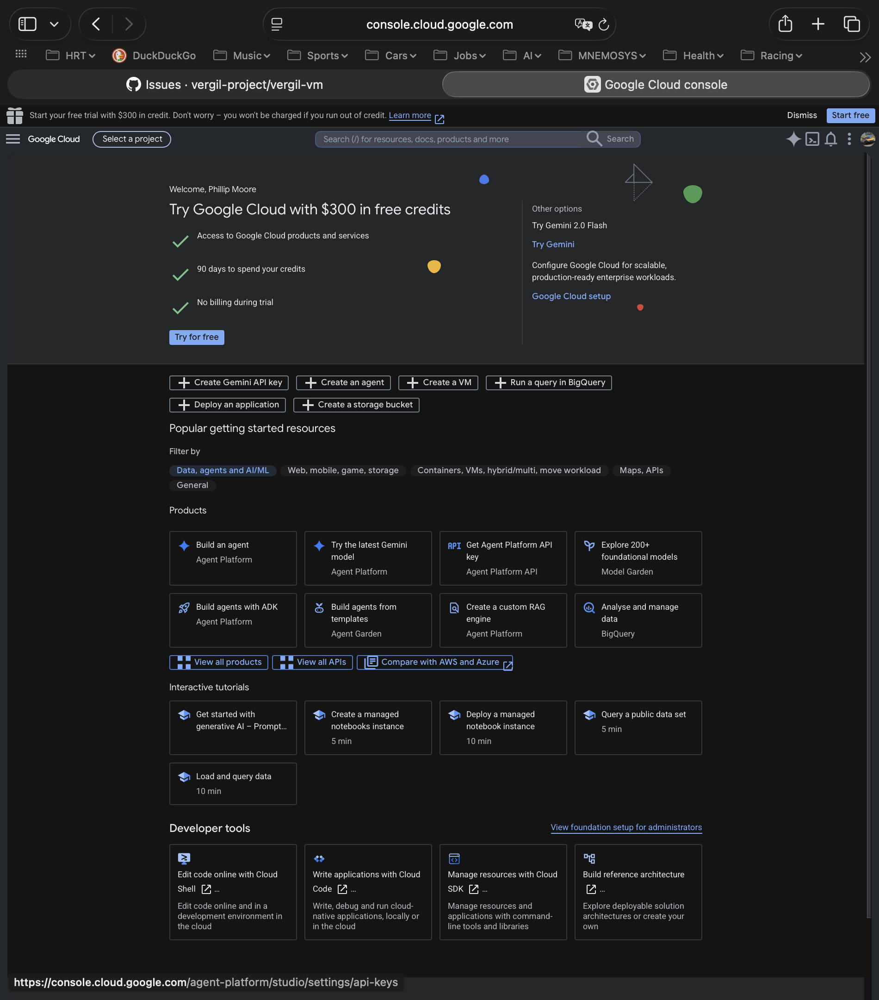
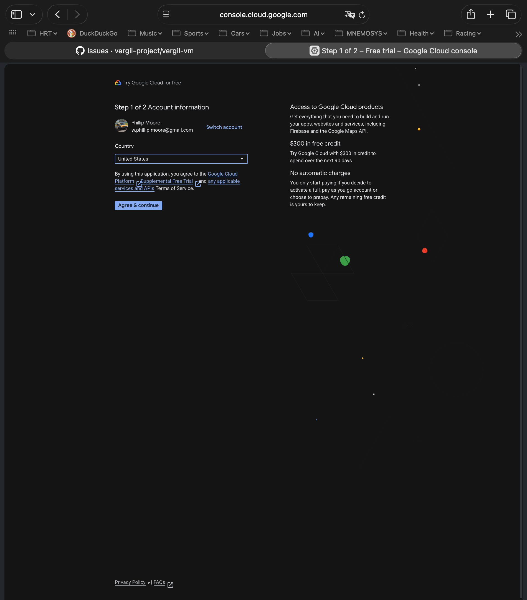

Off-Platform Cloud Setup (GCP)¶
A step-by-step guide to standing up the cloud-account prerequisites for the
off-platform VM backend (vergil-vm #199): a billed cloud project, host
credentials, permissions, and nested-virtualization quota — everything the
OpenTofu modules need before vrg-vm create can stand up a real cloud VM.
This guide is GCP-first (the primary target). An Azure section captures the parity steps when that path is set up.
The cloud setup is a macOS-host activity.
gcloudand the GCP Console run on your Mac, and the credential you create here (gcloudApplication Default Credentials) is host-local — it does not propagate into VMs the way the GitHub App credentials do. It is a distinct class of credential, managed only on the operator's Mac.
When you need this¶
Only repos that declare the off-platform backend in their vergil.toml
([vm.<identity>] backend = "off-platform") need a cloud project. The default local
Lima backend needs none of this. Today the one consumer is the native-x86 MQ cluster
lab.
What you will end up with¶
- A GCP project with billing enabled and the Compute Engine API on.
gcloudinstalled and authenticated on your Mac (Application Default Credentials).- IAM permissions to create instances, disks, firewall rules, and a Cloud Router + NAT.
- A private VM (no public IP): SSH ingress over an IAP tunnel; internet egress via a one-time Cloud NAT in your region (Step 11b).
- Confirmed nested-virtualization quota and a working machine-type + region.
- An SSH keypair for the instance.
Prerequisites¶
- A Google account that can sign in to console.cloud.google.com.
- Homebrew on your Mac (for the gcloud install below).
- A way to pay: GCP requires a billing account (a payment method) before you can run instances. We set that up in a later step; you just need a card available.
Step 1 — Install the Google Cloud CLI (macOS)¶
The Google Cloud CLI is a Homebrew cask named gcloud-cli. Install it with:
Gotcha:
brew install gclouddoes not work — there is nogcloudformula. Homebrew errors with "No available formula with the name gcloud" and suggests the cask: "To install gcloud-cli, run:brew install --cask gcloud-cli".
This installs the Google Cloud SDK (v573.0.0 at the time of writing; it pulls
python@3.14 as a dependency) and links the core binaries — gcloud, gsutil,
bq — into /opt/homebrew/bin, which is already on your PATH. So gcloud works
immediately; no PATH edit is needed for the core tool.
Optionally, enable shell completion and put the SDK's additional components on
PATH (for gcloud components install …) by sourcing the init scripts from your
shell profile (zsh):
echo 'source "/opt/homebrew/share/google-cloud-sdk/path.zsh.inc"' >> ~/.zshrc
echo 'source "/opt/homebrew/share/google-cloud-sdk/completion.zsh.inc"' >> ~/.zshrc
exec zsh
Verify the install:
gcloud version # -> Google Cloud SDK 573.0.0, bq, core, gsutil, ...
gcloud auth list # -> "No credentialed accounts." until you log in (Step 2)
gcloud config list # -> active configuration: [default], no project yet
Step 2 — Sign up for Google Cloud in the Console (free trial)¶
Go to console.cloud.google.com signed in with your Google account. A brand-new account lands on the Console with a free-trial onboarding front and centre:

What it offers: $300 in free credits, 90 days, and "no billing during the free trial." Click Try for free (or Start free trial in the top banner) to begin.
The one decision here — free trial vs. paid:
- Take the free trial. The $300 credit offsets the cost of the off-platform VM while you validate the setup, and — importantly — the credit carries over if you later upgrade to a paid account, so claiming it first costs you nothing.
- A payment method (card) is still required to start the trial. Google uses it to verify identity; you are not charged during the trial unless you explicitly upgrade to a paid account or exceed the credit.
- Check the quota — don't assume you must upgrade. Free trials can carry
restricted vCPU quotas, but not always (verify at Step 10). In this walkthrough the
regional
CPUS/N2_CPUSquota was already 200 — ample for a 16-vCPU box — most likely because the project sits under an established org. If yours genuinely is too low, you upgrade to paid or file a quota-increase; the $300 credit still applies after upgrading.
Click Try for free and continue to the sign-up form (country, Terms of Service, and the payment method) — captured in Steps 3–4.
Step 3 — Sign-up, part 1 of 2: Account information¶
The free-trial sign-up is two screens. The first is Account information — your country plus agreement to the Terms of Service:

Pick your country, accept the Google Cloud Platform + Free Trial + APIs Terms of Service, and click Agree & continue. Note the reassurance on the right — "No automatic charges: you only start paying if you decide to activate a full, pay-as-you-go account or choose to prepay. Any remaining free credit is yours to keep."
Step 4 — Sign-up, part 2 of 2: Payment information¶
The second screen is Payment information verification. It has two blocks, each with a Change link, and a Start free button:
- Contact information — your name and address, drawn from your Google payments profile. If you already use Google Play, Google One, or YouTube, GCP reuses your existing payments profile here rather than asking you to type a new one. (If you have no profile yet, you fill in account type — Individual or Business — name, and address.)
- Payment method — a card. Google verifies it but does not charge it: "this trial is still free… you won't be charged unless you manually activate a full pay-as-you-go account or choose to prepay."
Click Start free to finish.
No screenshot here on purpose. This screen shows your real payments-profile and card details; do not capture it into shared docs.
Step 5 — Create a dedicated project¶
Clicking Start free lands you back on the Console with the free trial active — a top banner shows "$300.00 credit and N days remaining" with an Activate full account button (the upgrade-to-paid path for later), and "0 of $300 credits used". The sign-up auto-creates a default project called "My First Project" with an auto-generated project number and ID.
Understand the identifiers (and "No organization") before you name it¶
A GCP project has three identifiers — only one is permanent:
- Project name (display name) — human-friendly, shown in the Console. Changeable anytime, not unique. Cosmetic.
- Project ID — globally unique across all of GCP, lowercase letters/digits/
hyphens, 6–30 chars. Immutable — you cannot rename it; "changing" it means
creating a new project and migrating. It is baked into
gcloud --project, resource paths (projects/<ID>/…), service-account emails (<name>@<PROJECT_ID>.iam.gserviceaccount.com), billing reports, and URLs. This is the one to choose deliberately — pick a clean, purpose-named ID that is not coupled to your personal user id (the same lesson as moving from a personal GitHub account to an org). - Project number — auto-assigned, immutable, numeric. You don't choose it.
The "No organization" line. A GCP Organization is the top-level owner of
projects — the analog of a GitHub org. It is created from a Google Workspace or Cloud
Identity account tied to a domain you own; a plain @gmail.com account has no
organization, so personal projects sit under "No organization," owned by your user
account. An Organization buys: ownership decoupled from one personal account,
centralized IAM + org policies, folders for hierarchy, and centralized billing — the
same reasons you graduate from personal GitHub repos to an org. The cost is setup: a
domain + Cloud Identity (there is a free tier) and domain verification. You can move
a project into an organization later (the Project ID stays fixed through the move),
so the safe order is: choose the ID well now; decide the org consciously (set it up
now for the clean structure, or stay under "No organization" and migrate later).
Org vs. "No organization" — a real choice. These off-platform VMs are a personal developer sandbox (not shared team infrastructure), so the usual "use an org to share with a team" driver doesn't apply. That leaves two defensible options:
- "No organization" — simplest; no org policies inherit, so nothing at the org level can block the VM (e.g. enforced OS Login). Zero friction.
- Your own (personal) org — if your account has a Cloud Identity / Workspace org
(here
w-phillip-moore-org), putting the project under it gives central governance and lets you apply org-level security policy on purpose (e.g. OS Login or external-IP restrictions). The cost: org policies inherit into the project and can restrict it (OS Login, Shielded VM, external IPs), so you must reconcile them with what the VM needs (Step 5b). The private no-public-IP design already satisfies most of these — an external-IP restriction aligns with it rather than conflicting.
This guide uses the personal org deliberately — managing everything in one place and
leveraging org-level SSH/security controls beats treating the org as a black box. If
you have no org (a plain @gmail.com with no Cloud Identity), stay under "No
organization" — it works the same for the VM.
Naming, decided:
- Display name — cosmetic and editable; use something friendly, e.g.
Vergil Project Personal Sandbox. - Project ID — instead of accepting GCP's random suggestion (e.g.
articulate-fort-500213-e2), choose a coherent self-namespace so all your personal Vergil projects share a prefix:vergil-project-<n>-a1,-a2, … (using the GitHub org namevergil-projectas the prefix). The 6-digit number in GCP's auto-suggestions is not a stable account id — it drifts across refreshes — so don't read meaning into it; just pick a clean prefix you control. The ID is immutable, the display name is not.
Don't build on "My First Project." Create the dedicated project with the name/ID above — it isolates the cloud resources, gives clean billing attribution, and lets you delete the whole project to clean up later.
- Open the project picker (the project name in the top bar) and choose New Project.
- Set the name (e.g.
Vergil Project Personal Sandbox). GCP shows an auto-generated Project ID beneath it — to use your ID you must click the small EDIT link next to it and type it (e.g.vergil-project-500213-a1). Skip EDIT (or hit Return early) and you get the random ID, with your text only as the display name — the most common trip-up on this screen. - Organization / Location: pick your org, or No organization, per the choice above.
- Create, then select the new project in the picker.
Cleaner alternative — create it from the CLI (after Step 6 auth). This sets the ID explicitly and skips the fiddly form entirely:
Record the Project ID — you need it for gcloud config set project <PROJECT_ID>
(Step 6) and the repo's off-platform profile.
Trial billing is account-wide. The free-trial billing account already covers any project you create under it, so a new project is billed to the trial automatically — no separate billing setup per project during the trial.
Gotchas on this screen (we hit all of these).
- The Console is not the source of truth — the CLI is. A just-created project can be missing from the picker, and a project you just moved can keep showing under its old parent for a while (the resource hierarchy caches/propagates, then catches up). Trust
gcloud projects listandgcloud projects describe <id> --format="value(parent)", not the Console.- A custom Project ID needs the EDIT link (step 2): skip it and you get a random ID, with your text only as the display name.
- Accidental creation / "pending deletion." Hitting Return can create a stray project. Deleting one soft-deletes it (recoverable ~30 days under "Resources pending deletion"); harmless —
gcloud projects delete <id>and carry on.- Moving a project into an org is a
betacommand:gcloud beta projects move(gcloud installs thebetacomponent on first use), and it warns that org policies may change what's enforced — see Step 5b.
Step 5b — (org path) move the project in and reconcile org policies¶
Skip this step if you stayed under "No organization." If you chose your personal org, move the project into it — the Project ID survives; only the parent changes:
gcloud organizations list # find <ORG_ID> + display name
gcloud beta projects move <PROJECT_ID> --organization=<ORG_ID>
gcloud projects describe <PROJECT_ID> --format="value(parent)" # -> organizations/<ORG_ID>
move is a beta command (gcloud installs the component on first use) and warns
that org policies may change what's enforced. The move needs an org-level role
(Project Mover / Project Creator) — on PERMISSION_DENIED, grant your account that role
at the org first.
Then reconcile the org policies with the VM's needs — the part most guides skip. List what the org enforces (enable the Org Policy API if prompted):
A newer org carries Google's secure-by-default managed policies. Read them against what the off-platform VM actually does:
| Constraint (seen here) | Effect | Off-platform impact |
|---|---|---|
iam.disableServiceAccountKeyCreation |
no service-account JSON keys | None — tofu uses your ADC (user) credential, not an SA key |
iam.disableServiceAccountKeyUpload |
no external SA keys | None |
iam.automaticIamGrantsForDefaultServiceAccounts |
default Compute SA gets no auto-Editor | None — the VM doesn't call GCP APIs from inside |
storage.uniformBucketLevelAccess |
GCS buckets use uniform access | None — tofu state is local, no buckets |
compute.restrictProtocolForwardingCreationForTypes |
limits protocol forwarding | None — not used |
compute.setNewProjectDefaultToZonalDNSOnly |
internal zonal DNS default | None — SSH is over the IAP tunnel to the internal IP, not external DNS |
compute.vmExternalIpAccess |
restricts external IPs | None — aligned. The VM has no external IP (IAP ingress + Cloud NAT egress), so an external-IP restriction matches the design |
The one that would block the VM — confirm it is NOT enforced (it wasn't here):
compute.requireOsLogin— forces IAM-based OS Login instead of metadata SSH keys. The module injects a metadata SSH key, so under enforced OS Login the backend's SSH path (vergil-tooling#1706session) must switch to OS Login.
The VM is private — no public IP. Ingress is an IAP tunnel to the internal IP (the
vmmodule opens a firewall rule for the IAP range35.235.240.0/20on tcp/22); egress is a Cloud NAT (Step 11b). So org policies that restrict external IPs never conflict — they reinforce the design. OS Login is the one real reconciliation item.
Net: moving into the org pulled in the secure-by-default set, none of which block the off-platform VM — even the external-IP restriction aligns with the private design, and OS Login was not enforced — clear to proceed. Check yours the same way before you build.
Step 6 — Authenticate gcloud (CLI: login + select project)¶
Once the account, project, and billing exist, point the CLI at them. Log in with your Google account (opens a browser for OAuth and stores your user credential):
gcloud auth login
gcloud auth list # -> your account, marked ACTIVE (*)
gcloud config set project <PROJECT_ID>
gcloud config list # -> account + project set
This user login is separate from the Application Default Credentials OpenTofu uses (Step 8). You need both: the user login to drive
gcloud, and ADC fortofu.macOS prompts for Local Network access. The first time a
gcloud auth …command opens a browser, macOS pops an alert asking to allow Python to discover applications/devices on the network. The OAuth flow runs a short-livedlocalhostlistener to catch the browser redirect, so you must click Allow or the hand-off never completes. Same prompt forgcloud auth loginandgcloud auth application-default login.
Step 7 — Billing + enable the Compute Engine API¶
Compute won't run without billing, and the API is off by default:
# Is billing linked? (the free trial often auto-links a new project)
gcloud billing projects describe <PROJECT_ID> # -> billingEnabled: true
# Only if billingEnabled is false, link the trial account:
gcloud billing accounts list # -> <ACCOUNT_ID>
gcloud billing projects link <PROJECT_ID> --billing-account=<ACCOUNT_ID>
# Enable Compute Engine
gcloud services enable compute.googleapis.com
gcloud services enableis slow and silent. It sits 30s–2min with no output while GCP turns the service on — it is not hung. Add--asyncto return immediately (it finishes in the background), or--verbosity=infofor a little feedback.
Step 8 — Application Default Credentials for OpenTofu¶
OpenTofu authenticates to GCP via Application Default Credentials (ADC), which are
separate from your gcloud user login. Create them (browser login again — same macOS
Local Network prompt as Step 6):
It writes ~/.config/gcloud/application_default_credentials.json and notes that your
project was added as the ADC quota project. That JSON file is the credential tofu
reads at apply time.
This is the host-local credential the off-platform design calls out. Unlike the GitHub App credentials (which are injected into the VM), the gcloud ADC credential lives only on your Mac and does not propagate anywhere — a distinct class of credential, with none of the usual propagation machinery. Keep it on the operator's machine.
Step 9 — IAM permissions¶
For a single-operator personal sandbox there's nothing extra to grant: you created
the project, so you're its Owner, and your ADC (Step 8) inherits that — which
already covers everything OpenTofu does (create instances, disks, firewall rules). The
in-VM GitHub App credentials are a separate concern, injected into the VM by the
backend (vergil-tooling#1706), not configured here.
(If you later drive the backend from a dedicated service account instead of your user
ADC, grant that account roles/compute.admin on the project — but the org policy
iam.disableServiceAccountKeyCreation means you'd use impersonation / workload
identity, not a downloaded key.)
Step 10 — Check vCPU quota¶
A nested-virt instance is large (the off-platform example is n2-standard-16 = 16
vCPU, N2 family — N2 supports nested virtualization). Confirm the region has the
quota. describe does not accept --filter (that's a list flag), so flatten and
grep:
gcloud compute regions describe us-central1 \
--flatten="quotas" \
--format="value(quotas.metric,quotas.limit,quotas.usage)" \
| grep -E '^(CPUS|N2_CPUS)'
CPUS— total vCPUs in the region;N2_CPUS— N2-family vCPUs.- You need each limit ≥ your instance size (16 for
n2-standard-16).
In this walkthrough both returned 200.0 (usage 0.0) — no increase needed. Do
not assume a free trial caps you low: a project under an established org often has
ample default quota. If yours genuinely is too low, validate first with a smaller box
(n2-standard-8 still proves nested KVM), or upgrade to paid / file a quota-increase.
Step 11 — Choose region, zone, and a nested-virt instance¶
These become the off-platform profile values (region / instance / volume).
- The instance family must support nested virtualization. On GCP that's N2, N2D,
C2, C2D, M1/M2/M3 (Intel Haswell+ / AMD with virtualization extensions) — not E2
or T2D. The off-platform example uses
n2-standard-16(16 vCPU, N2). To validate the backend cheaply first,n2-standard-8still proves nested KVM. - Region —
us-central1works (it has N2 and is where we checked quota). Pick one near you with N2 availability. - Zone — you don't set it in the profile: the OpenTofu volume module pins the
zone (
${region}-bby default) and the VM follows it.
Verify nested virt on your chosen machine type/zone against the current GCP nested-virtualization docs rather than a static list — the supported matrix shifts.
Step 11b — Cloud NAT for egress (one-time, per region)¶
The VM has no public IP (ingress is the IAP tunnel). IAP gives inbound SSH only —
it provides no outbound path. But provisioning fetches from the public internet (the
uv installer from astral.sh, apt packages, GitHub), so the box needs egress.
Without it, cloud-init hangs ~5 min per fetch and vrg-vm create fails at
await-readiness with "cloud-init did not complete".
The fix is a Cloud NAT — outbound-only, no inbound exposure, the canonical GCP pattern
for "IAP ingress + internet egress." It is a regional singleton: one Cloud Router +
NAT covers every off-platform VM in that region on the default network, so you create
it once per region, not per VM. (That's why it lives here in setup, not in the
per-instance OpenTofu module — see vergil-vm#226.)
Create it in the region you chose in Step 11 (us-central1 here):
gcloud compute routers create vergil-nat-router \
--network=default --region=us-central1 --project=<PROJECT_ID>
gcloud compute routers nats create vergil-nat \
--router=vergil-nat-router --region=us-central1 --project=<PROJECT_ID> \
--auto-allocate-nat-external-ips --nat-all-subnet-ip-ranges
Verify it exists (egress takes ~1–2 min to propagate after creation):
gcloud compute routers nats describe vergil-nat \
--router=vergil-nat-router --region=us-central1 --project=<PROJECT_ID> \
--format='value(name)'
One NAT per region is enough no matter how many repos/VMs you run there. If you build in a second region, repeat this step for that region.
Step 12 — SSH keypair¶
The VM is reached over SSH, and the OpenTofu vm module takes an ssh_public_key.
Generate a dedicated keypair on your Mac:
ssh-keygen -t ed25519 -f ~/.ssh/vergil-off-platform -C vergil-off-platform
cat ~/.ssh/vergil-off-platform.pub # the module's ssh_public_key input
In the full flow the backend (vergil-tooling#1706) manages this key per create and
injects it; for a manual tofu apply you pass the .pub contents as ssh_public_key.
Keep the private key on your Mac — like the gcloud ADC credential, it does not
propagate.
Next — declare the profile and create the VM¶
The account is ready. The VM lifecycle is driven by the off-platform backend:
- Declare the off-platform profile in the consuming repo's
vergil.toml:
[vm.vergil-user]
backend = "off-platform"
provider = "gcp"
region = "us-central1"
instance = "n2-standard-16" # or n2-standard-8 to validate
volume = "300GiB"
nested = true
- Create the VM —
vrg-vm create <org>/<repo>drives the OpenTofu modules, provisions via cloud-init, and injects credentials over SSH. That dispatch lives in vergil-tooling#1706 (not yet built); until then the modules can be exercised by a manualtofu applywith hand-composed inputs. - Confirm the payoff — a lab guest resolves
driver=kvm(nested KVM, not the TCG emulation tax) — the entire reason for the off-platform backend.
Azure (parity — TODO when the Azure path is set up)¶
The same shape: a subscription with billing, az login, a nested-virtualization-capable
SKU, region, and quota.